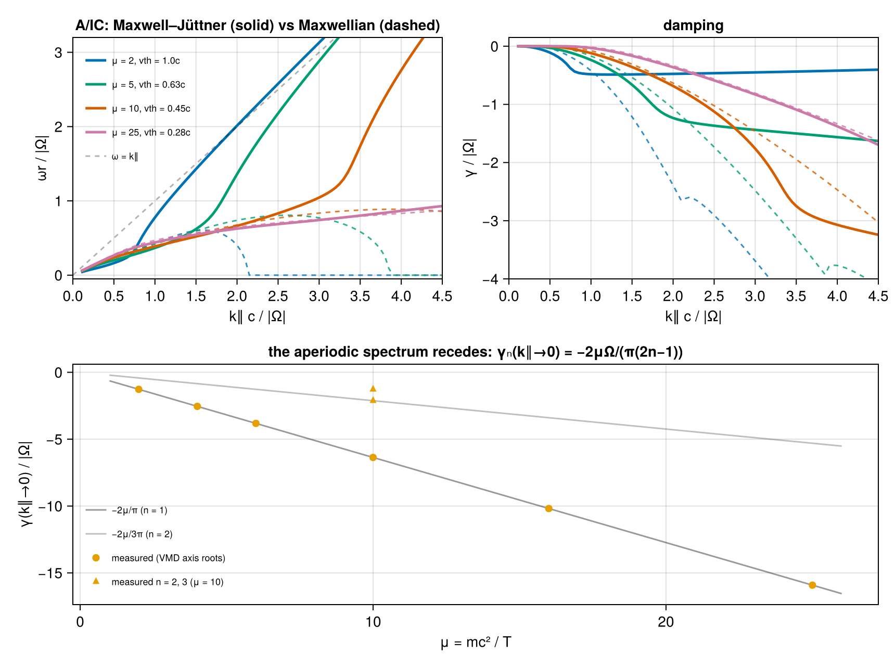

Relativistic pair plasma — validation vs López (2014) & Verscharen (2018)
A hot electron–positron pair plasma with isotropic Maxwell–Jüttner momentum distribution μ = mc²/T = 2Π²/β∥, at two temperatures: β = 1 (μ = 2, blue) and β = 0.2 (μ = 10, red). We reproduce Fig. 5 of Verscharen (2018, JPP, 10.1017/S0022377818000739) / López (2014, PoP, 10.1063/1.4894679) and the tabulated ALPS.
Verdict. Every published curve is reproduced — the damping at both temperatures, and both O-modes — except the A/IC ωr descent (the "anomalous zone"). That descent is a continuation artifact of López's Heaviside θ-term (non-holomorphic below the real axis); our corrected roots rise toward the light line instead (see The A/IC descent is a continuation artifact).
Modes on the page:
- quasi-parallel A/IC (low
ωr): weakly damped Alfvén-like at smallk∥, turning strongly cyclotron-damped, then running into the light line; - ordinary wave (O-mode, high
ωr): superluminal branch,γ ≈ 0; - nonpropagating (aperiodic) family (
ωr = 0) present at everyk∥with finite zero-kdamping — a purely relativistic feature.
using VlasovMaxwellDispersion
using Printf
using CairoMakiePlasma setup
Normalized to |Ω| = 1; Π² = ωp²/Ω² = 1 per species; momenta in mc, k in Ω/c. MaxwellJuttner(μ) feeds the relativistic closed-form tensor. Equal masses and opposite charges make R/L degenerate, so the parallel branch is a single Alfvén-like mode and every transverse root of the full determinant is a double zero.
pair(vdf) = (NormalizedSpecies(1.0, 1.0, vdf), NormalizedSpecies(-1.0, 1.0, vdf))
plasma2 = pair(MaxwellJuttner(mu=2.0)) ## β = 1.0
plasma10 = pair(MaxwellJuttner(mu=10.0)) ## β = 0.2
kp = 0.001
# ALPS test_relativistic roots (k⊥, k∥, Re ω, Im ω), refined from the tabulated
# values with seeded Muller — and the k∥=0.1 seed below.
alps = [
(0.001, 0.1, 3.9621e-2, -2.644e-6),
(0.001, 0.10965, 4.3132e-2, -2.2947e-8),
]2-element Vector{NTuple{4, Float64}}:
(0.001, 0.1, 0.039621, -2.644e-6)
(0.001, 0.10965, 0.043132, -2.2947e-8)Branch continuation
Every family below is traced by Muller continuation along k∥ on the L-mode, including across the light line: at exactly parallel k the MaxwellJuttner evaluator continues the Swanson integral to damped superluminal ω (see Beyond the light line).
function trace(plasma, kzs, seed)
ω = similar(kzs, ComplexF64)
s = seed
for i in eachindex(kzs)
s = solve(DispersionProblem(plasma, s, Wavenumber(0.0, kzs[i]); mode=:L)).omega
ω[i] = s
end
return ω
endtrace (generic function with 1 method)Purely imaginary (aperiodic) roots are found on the axis itself: the L-mode factor is real there, so roots are plain sign changes — bracketed bisection (axistrace) follows one member in k∥ and cannot jump branches even during close passes with propagating roots; a resolution-limited scan (axisladder) collects every member in a γ window at fixed k∥.
using VlasovMaxwellDispersion: DispersionFunction
function axistrace(plasma, kzs, s0; span=0.3)
out = similar(kzs)
s = s0
for i in eachindex(kzs)
fL = DispersionFunction(plasma, Wavenumber(0.0, kzs[i]); mode=:L)
g = x -> real(fL(complex(0.0, -x)))
lo, hi = (1 - span) * s, (1 + span) * s
glo = g(lo)
for _ in 1:50
m = (lo + hi) / 2
g(m) * glo > 0 ? (lo=m; glo=g(lo)) : (hi = m)
end
s = (lo + hi) / 2
out[i] = -s
end
return out
end
function axisladder(plasma, kz; smin=0.04, smax=0.5, n=800)
fL = DispersionFunction(plasma, Wavenumber(0.0, kz); mode=:L)
g = x -> real(fL(complex(0.0, -x)))
ss = range(smin, smax, length=n)
vals = map(g, ss)
out = Float64[]
for i in 1:(n-1)
sign(vals[i]) == sign(vals[i+1]) && continue
lo, hi, glo = ss[i], ss[i+1], vals[i]
for _ in 1:40
m = (lo + hi) / 2
g(m) * glo > 0 ? (lo = m) : (hi = m)
end
push!(out, -(lo + hi) / 2)
end
return out
end
# μ=2 propagating (A/IC): forward from the ALPS k∥=0.1 seed, backward to 0.05,
# up to the last subluminal point k∥=1.85 (crosses ωr = k∥c near 1.9).
kz2p = collect(0.05:0.05:1.85)
j0 = findfirst(==(0.1), kz2p)
ω2p = similar(kz2p, ComplexF64)
ω2p[j0:end] = trace(plasma2, kz2p[j0:end], complex(alps[1][3], alps[1][4]))
ω2p[1:(j0-1)] = reverse(trace(plasma2, reverse(kz2p[1:(j0-1)]), ω2p[j0]))
# μ=2 purely imaginary (aperiodic) family, both ways from k∥=0.85.
kz2d = collect(0.05:0.05:3.0)
j0d = findfirst(==(0.85), kz2d)
ω2d = similar(kz2d, ComplexF64)
ω2d[j0d:end] = trace(plasma2, kz2d[j0d:end], complex(1.0e-4, -0.478))
ω2d[1:(j0d-1)] = reverse(trace(plasma2, reverse(kz2d[1:(j0d-1)]), ω2d[j0d]))
# μ=2 second damped family: aperiodic at small k∥, leaving the axis near
# k∥≈0.21. Directly evaluable to k∥=0.95 (light-line crossing at k∥≈1.73).
kz2s = collect(0.15:0.05:0.95)
ω2s = similar(kz2s, ComplexF64)
ω2s[1] = trace(plasma2, [0.15], complex(0.0, -0.143))[1]
ω2s[2] = trace(plasma2, [0.2], complex(0.0, -0.2005))[1]
ω2s[3:end] = trace(plasma2, kz2s[3:end], complex(0.13, -0.227))
# μ=2 aperiodic ladder at small k∥ (axis scan, |γ| < 0.5; the deep n=1 member
# is the traced family above). The count grows as k∥→0: discrete damped roots
# crowding toward the k=0 cyclotron continuum ω = Ω/γ_L ∈ (0, Ω].
ladder = [(kz, axisladder(plasma2, kz)) for kz in (0.02, 0.05, 0.08, 0.1, 0.15, 0.2)]
# μ=10 propagating: continue forward/backward from a robust k∥=0.3 seed (fresh
# near-marginal seeds below k∥≈0.3 make Muller wander to the mirror root).
kz10 = collect(0.1:0.05:4.5)
j10 = findfirst(==(0.3), kz10)
ω10 = similar(kz10, ComplexF64)
ω10[j10:end] = trace(plasma10, kz10[j10:end], complex(0.155, -1.0e-4))
ω10[1:(j10-1)] = reverse(trace(plasma10, reverse(kz10[1:(j10-1)]), ω10[j10]))
# μ=10 aperiodic family over the full range (axistrace: Muller continuation
# would jump onto the propagating family during their close pass near
# k∥ ≈ 3.2–3.3; axis bisection cannot leave the imaginary axis).
# γ(k∥→0) = −20/π = −6.366.
kap10 = collect(0.05:0.05:4.5)
γap10 = axistrace(plasma10, kap10, 20 / π)
# μ=10 small-k aperiodic ladder members (axis scan, 0.09 < |γ| < 2.5; the
# deep n=1 member is the axistrace curve above)
ladder10 = [(kz, axisladder(plasma10, kz; smin=0.09, smax=2.5, n=900)) for kz in (0.02, 0.1, 0.3, 0.5, 1.0)]
# Two members of the μ=10 in-band quasimode stack, traced directly on the
# L-mode: the least-damped member crosses the light line near k∥ ≈ 2.2 and is
# carried across by the continued evaluator; Δk = 0.02 keeps Muller off the
# neighboring stack members.
kq10a = collect(1.5:0.02:4.4)
ωq10a = trace(plasma10, kq10a, 1.482 - 0.2422im)
kq10b = collect(0.4:0.02:1.4)
ωq10b = trace(plasma10, kq10b, 0.1752 - 0.3852im)
# μ=2 A/IC light-line continuation (direct trace on the continued L-mode):
# stays slightly superluminal (ωr/k∥ → 1.04) with slowly recovering damping.
kz2c = collect(1.9:0.1:3.0)
ω2c = trace(plasma2, kz2c, ω2p[end])
aic_cont = hcat(kz2c, real.(ω2c), imag.(ω2c))
# μ=2 second-family continuation across the resonance band: nearly flat γ,
# heading for the real superluminal EM branch at the band edge (k∥ ≈ 6.1).
# Δk = 0.02 through the light-line crossing at k∥ ≈ 1.73, else Muller jumps
# onto the near-real EM branch.
kz2f = collect(1.0:0.02:3.0)
ω2f = trace(plasma2, kz2f, ω2s[end])
f2_cont = hcat(kz2f, real.(ω2f), imag.(ω2f))101×3 Matrix{Float64}:
1.0 0.976678 -0.195585
1.02 0.997532 -0.195347
1.04 1.01837 -0.195117
1.06 1.03918 -0.194894
1.08 1.05998 -0.194679
1.1 1.08077 -0.19447
1.12 1.10153 -0.194268
1.14 1.12229 -0.194072
1.16 1.14303 -0.193882
1.18 1.16375 -0.193697
⋮
2.84 2.865 -0.186487
2.86 2.8854 -0.186437
2.88 2.9058 -0.186387
2.9 2.9262 -0.186337
2.92 2.9466 -0.186288
2.94 2.967 -0.186238
2.96 2.9874 -0.186189
2.98 3.0078 -0.18614
3.0 3.02819 -0.186091O-modes
Superluminal (ωr > k∥): the O-mode is near-marginal (γ ≈ 0), and the continued sheet below the axis is exponentially far from the physical boundary value near marginal superluminal ω (continuation note), so we locate it on the real axis as the |det 𝒟| → 0 minimum via the CoupledVDF path, continued in k∥. Momentum bounds follow the thermal spread (±15 mc at μ = 2, ±5 mc at μ = 10).
using VlasovMaxwellDispersion: DispersionFunction
plasmaC2 = pair(CoupledVDF(MaxwellJuttner(2.0); para=(-15.0, 15.0), perp=15.0, regime=Relativistic()))
plasmaC10 = pair(CoupledVDF(MaxwellJuttner(10.0); para=(-5.0, 5.0), perp=5.0, regime=Relativistic()))
function omode(plasmaC, kzs, wr0)
out = similar(kzs)
wr = wr0
for i in eachindex(kzs)
g = DispersionFunction(plasmaC, Wavenumber(kp, kzs[i]))
f = w -> abs(g(complex(w, 0.0)))
lo, hi = max(0.9wr, kzs[i] + 0.02), wr + 0.4 + 0.25kzs[i]
for _ in 1:60
m1, m2 = (2lo + hi) / 3, (lo + 2hi) / 3
f(m1) < f(m2) ? (hi = m2) : (lo = m1)
end
wr = (lo + hi) / 2
out[i] = wr
end
return out
end
kzo = collect(0.02:0.2:3.0)
kzo10 = collect(0.02:0.2:4.42)
ωo2 = omode(plasmaC2, kzo, 1.1)
ωo10 = omode(plasmaC10, kzo10, 1.5)
# Digitized Fig. 5 (Verscharen 2018), plotted as ×-crosses.
fig5 = (
aic_wr2=[
0.15 0.04; 0.25 0.044; 0.35 0.066; 0.45 0.084; 0.55 0.066;
0.65 0.022; 0.75 0.003; 1.0 0.0; 1.5 0.0; 2.0 0.0; 2.5 0.0; 3.0 0.0
],
aic_gm2=[
0.35 -0.09; 0.45 -0.09; 0.55 -0.22; 0.65 -0.24; 0.75 -0.3;
0.85 -0.35; 0.95 -0.41; 1.05 -0.46; 1.15 -0.55; 1.25 -0.66; 1.45 -0.81;
1.75 -1.25; 1.95 -1.69; 2.25 -2.03; 2.45 -2.47; 2.65 -3.0; 2.95 -3.9
],
o_wr2=[
0.05 1.09; 0.35 1.14; 0.65 1.27; 0.95 1.45; 1.25 1.65; 1.55 1.9;
1.85 2.14; 2.15 2.37; 2.45 2.65; 2.75 2.93
],
aic_wr10=[
0.25 0.177; 0.45 0.234; 0.65 0.304; 0.85 0.348; 1.05 0.385;
1.25 0.4; 1.45 0.425; 1.65 0.444; 1.85 0.425; 1.95 0.393; 2.05 0.356;
2.15 0.275; 2.35 0.15; 2.45 0.077; 2.65 0.044; 2.85 0.0
],
aic_gm10=[
0.85 -0.099; 1.05 -0.16; 1.25 -0.214; 1.45 -0.386; 1.65 -0.54;
1.85 -0.722; 2.05 -0.902; 2.25 -1.08; 2.45 -1.19; 2.65 -1.339;
2.85 -1.499; 2.95 -1.581
],
o_wr10=[
0.05 1.511; 0.35 1.537; 0.65 1.614; 0.95 1.749; 1.25 1.918;
1.55 2.127; 1.75 2.274; 2.05 2.512; 2.35 2.758; 2.65 2.971
],
)(aic_wr2 = [0.15 0.04; 0.25 0.044; … ; 2.5 0.0; 3.0 0.0], aic_gm2 = [0.35 -0.09; 0.45 -0.09; … ; 2.65 -3.0; 2.95 -3.9], o_wr2 = [0.05 1.09; 0.35 1.14; … ; 2.45 2.65; 2.75 2.93], aic_wr10 = [0.25 0.177; 0.45 0.234; … ; 2.65 0.044; 2.85 0.0], aic_gm10 = [0.85 -0.099; 1.05 -0.16; … ; 2.85 -1.499; 2.95 -1.581], o_wr10 = [0.05 1.511; 0.35 1.537; … ; 2.35 2.758; 2.65 2.971])Figure 5 reproduction
One row per temperature. Line style identifies the root family: solid A/IC propagating (dashed past the light line: corrected-continuation segments), dash-dot O-mode, dotted aperiodic (shown over the full k∥ range). Thin translucent lines: in-band quasimodes (μ=2 second family; μ=10 stack), with their aperiodic-ladder members as small dots. Crosses: digitized Fig. 5; black dots: tabulated ALPS roots. The styles deliberately do not connect the distinct propagating and purely imaginary families.
blu, red = Makie.wong_colors()[1], Makie.wong_colors()[6]
fig = Figure(size=(860, 720))
axr2m = Axis(
fig[1, 1]; ylabel="ωr / |Ω|",
title="β = 1.0 (μ = 2)", limits=(0, 3, -0.09, 3.2)
)
axi2m = Axis(fig[1, 2]; ylabel="γ / |Ω|", title="damping", limits=(0, 3, -4, 0.3))
axr10 = Axis(
fig[2, 1]; xlabel="k∥ c / |Ω|", ylabel="ωr / |Ω|",
title="β = 0.2 (μ = 10)", limits=(0, 4.5, -0.09, 3.2)
)
axi10 = Axis(fig[2, 2]; xlabel="k∥ c / |Ω|", ylabel="γ / |Ω|", limits=(0, 4.5, -6.6, 0.4))
# μ=2 row
lines!(axr2m, kz2p, real.(ω2p); color=blu, linewidth=2.5, label="A/IC")
lines!(axi2m, kz2p, imag.(ω2p); color=blu, linewidth=2.5)
lines!(axr2m, aic_cont[:, 1], aic_cont[:, 2]; color=blu, linewidth=2.0, linestyle=:dash, label="A/IC continued")
lines!(axi2m, aic_cont[:, 1], aic_cont[:, 3]; color=blu, linewidth=2.0, linestyle=:dash)
lines!(axr2m, kz2d, zero(kz2d); color=blu, linewidth=2.5, linestyle=:dot, label="aperiodic")
lines!(axi2m, kz2d, imag.(ω2d); color=blu, linewidth=2.5, linestyle=:dot)
lines!(axr2m, kzo, ωo2; color=blu, linewidth=2.5, linestyle=:dashdot, label="O-mode")
lines!(axi2m, kzo, zero(kzo); color=blu, linewidth=2.5, linestyle=:dashdot)
lines!(axr2m, kz2s, real.(ω2s); color=(blu, 0.4), linewidth=1.5, label="2nd family")
lines!(axi2m, kz2s, imag.(ω2s); color=(blu, 0.4), linewidth=1.5)
lines!(axr2m, f2_cont[:, 1], f2_cont[:, 2]; color=(blu, 0.4), linewidth=1.5, linestyle=:dash, label="2nd continued")
lines!(axi2m, f2_cont[:, 1], f2_cont[:, 3]; color=(blu, 0.4), linewidth=1.5, linestyle=:dash)
for (kl, γs) in ladder
scatter!(axi2m, fill(kl, length(γs)), γs; color=(blu, 0.35), markersize=5)
end
for (m, ax) in ((fig5.aic_wr2, axr2m), (fig5.o_wr2, axr2m), (fig5.aic_gm2, axi2m))
scatter!(ax, m[:, 1], m[:, 2]; color=(blu, 0.75), marker=:xcross, markersize=8)
end
lines!(axr2m, 0:3, 0:3; color=(:black, 0.3), linestyle=:dash, label="ω = k∥")
hlines!(axi2m, [0.0]; color=(:black, 0.3), linestyle=:dash)
axislegend(axr2m; position=:lt, framevisible=false, labelsize=9, nbanks=2)
# μ=10 row
lines!(axr10, kz10, real.(ω10); color=red, linewidth=2.5, label="A/IC")
lines!(axi10, kz10, imag.(ω10); color=red, linewidth=2.5)
lines!(axr10, kap10, zero(kap10); color=red, linewidth=2.5, linestyle=:dot, label="aperiodic")
lines!(axi10, kap10, γap10; color=red, linewidth=2.5, linestyle=:dot)
for (kl, γs) in ladder10
scatter!(axi10, fill(kl, length(γs)), γs; color=(red, 0.35), markersize=5)
end
lines!(axr10, kq10a, real.(ωq10a); color=(red, 0.4), linewidth=1.5, label="quasimodes")
lines!(axi10, kq10a, imag.(ωq10a); color=(red, 0.4), linewidth=1.5)
lines!(axr10, kq10b, real.(ωq10b); color=(red, 0.4), linewidth=1.5)
lines!(axi10, kq10b, imag.(ωq10b); color=(red, 0.4), linewidth=1.5)
lines!(axr10, kzo10, ωo10; color=red, linewidth=2.5, linestyle=:dashdot, label="O-mode")
lines!(axi10, kzo10, zero(kzo10); color=red, linewidth=2.5, linestyle=:dashdot)
for (m, ax) in ((fig5.aic_wr10, axr10), (fig5.o_wr10, axr10), (fig5.aic_gm10, axi10))
scatter!(ax, m[:, 1], m[:, 2]; color=(red, 0.75), marker=:xcross, markersize=8)
end
lines!(axr10, 0:4, 0:4; color=(:black, 0.3), linestyle=:dash, label="ω = k∥")
hlines!(axi10, [0.0]; color=(:black, 0.3), linestyle=:dash)
axislegend(axr10; position=:lt, framevisible=false, labelsize=9, nbanks=2)
figRoot families
The transverse dispersion relation carries two families that never merge (closest approach at k∥ ≈ 0.85: ω ≈ 0.53 − 0.46im for the propagating root vs −0.48im for the aperiodic one), plus a stack of in-band quasimodes:
| family | μ = 2 | μ = 10 |
|---|---|---|
| propagating A/IC | ωr rises, γ saturates at ` | γ |
aperiodic (ωr=0) | at every k∥; γ→−1.271=−4/π as k∥→0, ` | γ |
| in-band quasimodes | one second family (aperiodic at small k∥, leaves the axis near k∥≈0.21, traverses the band, lands on the EM branch) | a stack — ≥5 members at k∥=1.5 hugging the light line; the count scales with μ |
Two mechanisms make the aperiodic and saturation behavior purely relativistic:
- Finite zero-
kdamping. The mass shiftΩ → Ω/γ_Lsmears the cyclotron line into the continuumω = Ω/γ_L ∈ (0, Ω]even without Doppler broadening, so an overdamped oscillation decays atO(Ω)atk∥ = 0. The wholek∥→0aperiodic spectrum is an exact odd-harmonic ladder,γ_n → −2μΩ/(π(2n−1))(continuing the resonance toω = −i|γ|makes the Jüttner factor a pure phase; electron/positron conjugate phases cancel whencos(μΩ/|γ|) = 0) — derived and verified intest/test-reduction.jl. The displayed aperiodic curve is itsn = 1member. - Cyclotron saturation. The A/IC damping plateaus at
|γ| ≈ Ω/2because the resonance is smeared by the damping rate itself; it recovers slowly as the minimum resonant Lorentz factor climbs into thee^{−μγ}tail, so the root surfs the light line instead of overdamping.
The propagating root rising toward the light line (rather than following the published finite-ωr descent) is exactly the "large-k∥/low-ωr end of the A/IC branch" where Verscharen et al. §4.4 flag the López–ALPS deviation — and ALPS's own ωr tails overshoot the López descent in our direction.
Beyond the light line
At exactly parallel k, however, the Swanson ξ-integrand factorizes and MaxwellJuttner evaluates the analytic continuation of the subluminal germ directly (certified to ~10⁻¹⁰ against the corrected closed-form López continuation of script 09, itself holomorphic through the gap k∥c < ωr < √(k∥²c² + Ω²)); the traces above use it. It carries the families across:
- the A/IC stays slightly superluminal (
ωr/k∥ → 1.04) with slowly recovering damping — relativistic cyclotron resonance survivesv_ph > cwhileωr² − k∥²c² ≲ Ω², fading as the resonant Lorentz factors climb; - the second family crosses at
k∥ ≈ 1.73, traverses the whole band with nearly flat damping (γ ≈ −0.196 → −0.177), and at the band edge (k∥ ≈ 6.1, whereωr² − k∥²c² = Ω²) the damping shuts off and it lands on the real superluminal EM branchω² = k∥²c² + 2Π²K₁(μ)/K₂(μ)(= k∥²c² + 1.102atμ = 2). Atμ = 10the EM branch (1.72) is well separated from the edge, so the arriving quasimode crosses at finite depth (γ ≈ −0.28) and persists as a distinct damped mode.
The A/IC descent is a continuation artifact
Everything above matches the published references except the A/IC ωr descent. We adjudicated this numerically, since analytic continuation off the upper half-plane — where all three codes agree and no continuation is needed — is unique:
- Reimplementing López et al. (2014) Eqs. (23)–(26) reproduces their published curves exactly (their formula does carry the descent, e.g.
μ = 10peakωr = 0.443atk∥ = 1.7) and matches our root where everyone agrees (ω = 0.03919atk∥ = 0.1, identical to VMD). - AAA rational extrapolation of dense upper-half-plane samples of both functions (held-out residuals
10⁻¹¹–10⁻¹⁰) lands on our root (Δ ≤ 0.002), not the López descent root (Δ ≈ 0.05–0.5): López's own upper-half-plane values do not continue to their descent root. - Mechanism. Their continuation term
θ(the Heaviside-supportedπσΘ(γ−γ₁)Θ(γ₂−γ)in Eqs. 23–24) depends only onRe zandsign(Im z), enforcing continuity across the real axis but violating Cauchy–Riemann below it: the continuedΛ_Lhas holomorphy defect|∂f/∂z̄|/|∂f/∂z| ≈ 0.09–3in the lower half-plane vs~10⁻⁶for our determinant. The non-holomorphicΛ_Lacquires a spurious zero — the anomalous-zone descent — with no counterpart in the true continuation.
The finite-ωr descent is not a mode of the Maxwell–Jüttner pair plasma; it is the nonrelativistic topology (descend, merge, overdamp) leaking into a relativistic calculation through a non-holomorphic continuation — as the next section makes explicit.
Nonrelativistic contrast
The same pair plasma handed to the nonrelativistic theory: a Maxwellian with vth = √(2/μ) c, the NR limit of Maxwell–Jüttner. At μ = 2 that is vth = c — not a physical NR plasma, and that is the point: this is what the NR formulas produce at this temperature.
plasmaM = pair(Maxwellian(sqrt(2 / 2.0)))
kzM = collect(0.1:0.05:3.0)
ωM = trace(plasmaM, kzM, complex(0.057, -1.0e-6))
jm = findfirst(i -> abs(real(ωM[i])) < 1.0e-4, eachindex(ωM)) ## merge onto the axis42The NR root topology is qualitatively different — and it is exactly the topology the published (artifact) curves mimic:
- the NR branch's
ωrrises to a hump (≈ 0.61atk∥ ≈ 1.6), descends to zero, and merges onto the imaginary axis (k∥ ≈ 2.13), continuing as a purely damped root — a textbook underdamped → overdamped transition. NR resonant velocities(ωr ± Ω)/k∥are unbounded, so cyclotron damping grows withk∥without limit (no plateau) and overdamps the mode. - the NR dispersion function is built from the plasma
Zfunction — an entire function. Landau continuation below the axis is trivial and unique; there is no branch point, no light line, and no way to make López'sθ-term mistake.
What is non-trivial relativistically, by contrast:
- Compact resonant support
|v| ≤ cputs branch points atω = ±k∥c(and±√(k∥²c² + Ω²)). The propagating branch cannot overdamp — it saturates at|γ| ≈ Ω/2and surfs the light line superluminally. All the continuation subtlety lives here: the descent-and-merge their formula produces is plausible precisely because it is what the familiar NR topology does — but relativistically it is an artifact. - The relativistic mass spread smears the cyclotron line into a continuum, keeping the aperiodic family damped (
γ → −1.271) atk∥ → 0. Nonrelativistically the resonance is sharp and zero-kcollisionless damping is impossible. - Two coexisting families instead of one branch changing character: the relativistic roots never merge; the NR case has one branch that transitions at a genuine merge point.
grn = Makie.wong_colors()[3]
fig2 = Figure(size=(860, 430))
axr2 = Axis(
fig2[1, 1]; xlabel="k∥ c / |Ω|", ylabel="ωr / |Ω|",
title="relativistic (μ = 2) vs nonrelativistic (vth = c)", limits=(0, 3, -0.09, 3.2)
)
axi2 = Axis(
fig2[1, 2]; xlabel="k∥ c / |Ω|", ylabel="γ / |Ω|",
title="damping", limits=(0, 3, -4, 0.3)
)
lines!(axr2, kz2p, real.(ω2p); color=blu, linewidth=2.5, label="A/IC relativistic")
lines!(axi2, kz2p, imag.(ω2p); color=blu, linewidth=2.5)
lines!(axr2, aic_cont[:, 1], aic_cont[:, 2]; color=blu, linewidth=2.0, linestyle=:dash, label="A/IC continued")
lines!(axi2, aic_cont[:, 1], aic_cont[:, 3]; color=blu, linewidth=2.0, linestyle=:dash)
lines!(axr2, kz2d, zero(kz2d); color=blu, linewidth=2.5, linestyle=:dot, label="aperiodic relativistic")
lines!(axi2, kz2d, imag.(ω2d); color=blu, linewidth=2.5, linestyle=:dot)
lines!(axr2, kzM[1:jm], real.(ωM[1:jm]); color=grn, linewidth=2.5, label="A/IC nonrelativistic")
lines!(axi2, kzM[1:jm], imag.(ωM[1:jm]); color=grn, linewidth=2.5)
lines!(axr2, kzM[jm:end], real.(ωM[jm:end]); color=grn, linewidth=2.5, linestyle=:dot, label="aperiodic NR (merged)")
lines!(axi2, kzM[jm:end], imag.(ωM[jm:end]); color=grn, linewidth=2.5, linestyle=:dot)
scatter!(axr2, [kzM[jm]], [0.0]; color=:black, markersize=9)
scatter!(axi2, [kzM[jm]], [imag(ωM[jm])]; color=:black, markersize=9)
lines!(axr2, 0:3, 0:3; color=(:black, 0.3), linestyle=:dash, label="ω = k∥")
hlines!(axi2, [0.0]; color=(:black, 0.3), linestyle=:dash)
axislegend(axr2; position=:lt, framevisible=false, labelsize=9)
fig2The role of the Doppler shift
The parallel resonance condition γ_L (ω − k∥ v∥) = ±Ω composes a Doppler shift k∥ v∥ with the relativistic mass shift Ω → Ω/γ_L. Every result above sorts into three regimes:
- No Doppler (
k∥ → 0): NR the resonance collapses to the sharp lineω = ±Ωand low-frequency collisionless damping vanishes. Relativistically the mass shift alone spreads the line intoω = Ω/γ_L ∈ (0, Ω], keeping the aperiodic family damped (γ → −1.271) and supplying the ladder. The zero-kdamping owes nothing to Doppler. - Bounded Doppler (finite
k∥, relativistic): with|v∥| < cthe shifts cap atk∥c, so resonance is possible iffω² − k∥²c² ≤ Ω². This one inequality organizes the large-k∥physics — A/IC saturation, persistent damping for superluminal phase speeds inside the band, and the second family's damping shutting off exactly at the band edge (k∥ ≈ 6.1). - Unbounded Doppler (NR): the Gaussian populates every
v, so(ωr ± Ω)/k∥always finds resonant particles, damping grows withk∥without limit, and the branch overdamps — the merge above. The NR theory has no band edge to cross, which is precisely why it cannot reproduce the relativistic topology.
Degeneration to the Maxwellian limit
How does the relativistic topology turn into the Maxwellian one as the plasma cools? Scan μ = 2 → 25 (vth/c = √(2/μ) = 1 → 0.28), tracing the A/IC branch of the Maxwell–Jüttner plasma (solid) against its Maxwellian twin (dashed):
function seedtrace(plasma, kzs; k0=0.3)
best = complex(NaN, NaN)
for wr in 0.05:0.02:0.27
r = solve(DispersionProblem(plasma, complex(wr, -1.0e-4), Wavenumber(0.0, k0); mode=:L))
ω = r.omega
(isfinite(ω) && r.resid < 1.0e-8 && 0.01 < real(ω) < k0 && -0.15 < imag(ω) < 0) || continue
(isnan(best) || imag(ω) > imag(best)) && (best = ω)
end
j = findfirst(==(k0), kzs)
ω = similar(kzs, ComplexF64)
ω[j:end] = trace(plasma, kzs[j:end], best)
ω[1:(j-1)] = reverse(trace(plasma, reverse(kzs[1:(j-1)]), ω[j]))
return ω
end
kzt = collect(0.1:0.05:4.5)
mus = (2.0, 5.0, 10.0, 25.0)
ωmj = [seedtrace(pair(MaxwellJuttner(mu=μ)), kzt) for μ in mus]
ωmx = [seedtrace(pair(Maxwellian(sqrt(2 / μ))), kzt) for μ in mus]4-element Vector{Vector{ComplexF64}}:
[0.05737532854946616 - 3.0102124587661202e-12im, 0.08535681343080614 - 2.400097052418756e-16im, 0.11239579843842529 - 3.8690374670978656e-9im, 0.1379360670540275 - 7.264588983371492e-6im, 0.1609160784057066 - 0.0003298398586542559im, 0.18033842987295315 - 0.0026752638207373967im, 0.19715046558703309 - 0.009277371210340885im, 0.2132456250646639 - 0.02092735027027958im, 0.2298417398474189 - 0.037430054597767395im, 0.24737245563758717 - 0.05841454349404323im … 1.910289736996576e-15 - 5.638129826723181im, 2.3572106549171067e-15 - 5.736651405374967im, 2.3323947212069942e-15 - 5.835583700379148im, 2.0409951888417273e-15 - 5.934916608017049im, 2.5327901210481743e-15 - 6.0346405404406465im, 2.0499528861001513e-15 - 6.134746386163331im, 2.1700121822497425e-15 - 6.235225474505327im, 1.9827771105625856e-15 - 6.336069543511004im, 2.283758598091729e-15 - 6.437270710924368im, 2.274115446865365e-15 - 6.538821447866717im]
[0.05755396914479814 + 7.338230133701826e-20im, 0.08598516842507108 - 2.0393025175737314e-16im, 0.11398457320099331 - 1.1307698075652116e-19im, 0.1413762138320721 - 1.0821711952988457e-13im, 0.167945721715439 - 6.361925330692172e-9im, 0.19340231092190613 - 2.0240638044062237e-6im, 0.21727500187037035 - 6.847521131438699e-5im, 0.2388898381960599 - 0.0006407978795405743im, 0.25791965693512137 - 0.002765960985077744im, 0.2748399351569021 - 0.007480771470741986im … -7.104306019148453e-16 - 3.7866738664905917im, 5.248992465249798e-16 - 3.811243818792068im, 4.811586671934817e-16 - 3.8409926522473907im, 2.385188190523753e-16 - 3.874595061144111im, -4.0981159422621103e-16 - 3.911206885356244im, 1.5819915892500893e-12 - 3.9502529079860826im, 3.4103639249868027e-13 - 3.991321301648004im, -2.625285993242517e-16 - 4.034105818891909im, -2.5562179120942915e-16 - 4.0783717682940885im, 4.308614278183474e-17 - 4.123934834383304im]
[0.057612650135309924 + 8.719055251036883e-20im, 0.08618739966511547 - 2.47661730060031e-16im, 0.1144787745879538 - 1.5463263641630295e-19im, 0.1423825242552543 + 2.3118844182606116e-13im, 0.16978447108482883 - 4.869651502280362e-17im, 0.196555417576545 - 4.852323165606591e-12im, 0.22254244888216496 - 9.219288601097861e-9im, 0.2475502261626328 - 1.0711270741114712e-6im, 0.2712944760122938 - 2.6513794507232037e-5im, 0.293359459041712 - 0.0002425790589292192im … 0.885698189966832 - 2.5239842096367573im, 0.884362292109277 - 2.5786221049449476im, 0.88261496575605 - 2.6336234445626134im, 0.8804423346173594 - 2.688986997640656im, 0.8778295099512191 - 2.7447116428064504im, 0.8747604975587099 - 2.800796364923022im, 0.8712180920008997 - 2.8572402520169713im, 0.8671837558619714 - 2.9140424923586665im, 0.8626374814213819 - 2.9712023716797953im, 0.8575576315188375 - 3.028719270514643im]
[0.057647657328786725 + 9.57380238451745e-20im, 0.08630713295466887 - 2.7672481647314115e-16im, 0.1147680284624988 - 1.9201320213959347e-19im, 0.1429618157874449 + 2.7376102203317943e-13im, 0.17081780387167364 + 3.5996522915529354e-19im, 0.1982623595200153 + 2.063991803496597e-12im, 0.22521789913301432 + 7.808890509931634e-14im, 0.251601500070335 + 2.7969042402269523e-15im, 0.2773228454397785 - 8.272628013986648e-12im, 0.3022808782876202 - 2.9266284136766094e-9im … 0.8354284623526518 - 1.3629411700245762im, 0.8391751550444897 - 1.3910383181972046im, 0.8428963666212328 - 1.419291242779839im, 0.8465908132582629 - 1.4477003493931413im, 0.8502571622893467 - 1.476265948766056im, 0.8538940412485078 - 1.504988262951566im, 0.857500045669587 - 1.5338674316198682im, 0.8610737457583624 - 1.5629035183280193im, 0.8646136920477613 - 1.5920965166862366im, 0.8681184201408998 - 1.621446356359106im]The two descriptions converge pointwise but never topologically:
- at
μ = 25the curves are nearly indistinguishable throughk∥ ≈ 3.5(Δωr < 0.02); atμ = 10they part pastk∥ ≈ 2.5; atμ = 2they disagree everywhere beyondk∥ ≈ 0.5; - every Maxwellian branch eventually descends and merges onto the imaginary axis (
k∥ ≈ 2.15atvth = c,≈ 3.9at0.63c), while every Maxwell–Jüttner branch — at any finite temperature — eventually peels off and rises toward the light line. Cooling only postpones the relativistic behavior to largerk∥; it never removes it. - the aperiodic sector degenerates cleaner still: the ladder
γ_n(k∥→0) = −(4/π)(c/vth)²Ω/(2n−1)recedes to−i∞asvth/c → 0— the Maxwellian theory's absence of zero-kcollisionless damping is recovered as the entire relativistic aperiodic spectrum pushed to infinite damping.
# k∥→0 ladder members measured as VMD axis roots at k∥ = 0.01 (finite-k shift
# O(k∥²)): n=1 across μ, plus n=2,3 at μ=10 (tight span keeps the bisection
# bracket off the neighboring members)
μ0s = [2.0, 4.0, 6.0, 10.0, 16.0, 25.0]
γ0μ1 = [axistrace(pair(MaxwellJuttner(mu=μ)), [0.01], 2μ / π)[1] for μ in μ0s]
γ0μ23 = [axistrace(plasma10, [0.01], 20 / (3π); span=0.12)[1],
axistrace(plasma10, [0.01], 20 / (5π); span=0.12)[1]]
cols = Makie.wong_colors()[[1, 3, 6, 4]]
fig3 = Figure(size=(860, 640))
ax3r = Axis(
fig3[1, 1]; xlabel="k∥ c / |Ω|", ylabel="ωr / |Ω|",
title="A/IC: Maxwell–Jüttner (solid) vs Maxwellian (dashed)", limits=(0, 4.5, -0.05, 3.2)
)
ax3i = Axis(fig3[1, 2]; xlabel="k∥ c / |Ω|", ylabel="γ / |Ω|", title="damping", limits=(0, 4.5, -4, 0.15))
for (i, μ) in enumerate(mus)
c = cols[i]
a, b = ωmj[i], ωmx[i]
na = something(findfirst(isnan, a), length(a) + 1) - 1 ## clip at the light-line NaNs
lines!(ax3r, kzt[1:na], real.(a[1:na]); color=c, linewidth=2.5, label="μ = $(Int(μ)), vth = $(round(sqrt(2/μ), digits=2))c")
lines!(ax3i, kzt[1:na], imag.(a[1:na]); color=c, linewidth=2.5)
lines!(ax3r, kzt, real.(b); color=(c, 0.8), linewidth=1.5, linestyle=:dash)
lines!(ax3i, kzt, imag.(b); color=(c, 0.8), linewidth=1.5, linestyle=:dash)
end
lines!(ax3r, 0:4, 0:4; color=(:black, 0.3), linestyle=:dash, label="ω = k∥")
axislegend(ax3r; position=:lt, framevisible=false, labelsize=9)
ax30 = Axis(
fig3[2, 1:2]; xlabel="μ = mc² / T", ylabel="γ(k∥→0) / |Ω|",
title="the aperiodic spectrum recedes: γₙ(k∥→0) = −2μΩ/(π(2n−1))"
)
lines!(ax30, 1 .. 26, μ -> -2μ / π; color=(:black, 0.4), label="−2μ/π (n = 1)")
lines!(ax30, 1 .. 26, μ -> -2μ / 3π; color=(:black, 0.25), label="−2μ/3π (n = 2)")
scatter!(ax30, μ0s, γ0μ1; color=Makie.wong_colors()[2], markersize=10, label="measured (VMD axis roots)")
scatter!(ax30, [10.0, 10.0], γ0μ23; color=Makie.wong_colors()[2], marker=:utriangle, markersize=9, label="measured n = 2, 3 (μ = 10)")
axislegend(ax30; position=:lb, framevisible=false, labelsize=9)
fig3
This page was generated using Literate.jl.